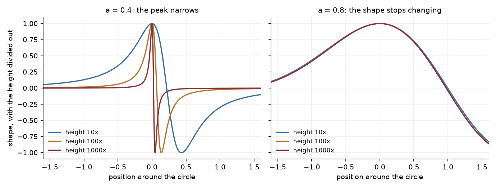

Whether a fluid can tear itself apart in finite time is a Clay Millennium Prize problem, and nobody can answer it in three dimensions. So the field builds technique on one dimensional models that keep the fight between vortex stretching and transport and discard the geometry. This is a study of one such family, where the blowup happens in two structurally different ways, and of how to measure the one that freezes without the grid getting in the way.
Constantin, Lax and Majda wrote down a one dimensional model of vortex stretching in 1985 and solved it in closed form. It blows up. De Gregorio added the transport term back in 1990, and transport is a calming influence: it slides the sharpening part of the wave away from the region doing the sharpening. Okamoto, Sakajo and Wunsch embedded both in a single family with a parameter a that dials transport from absent to full.
Both ends of that dial are known exactly, and that is what makes the family worth using as an instrument. At a = 0 the 1985 solution gives a blowup at time exactly 2. At a = 1 something sharper happens: every multiple of sin x is a steady state, so the critical case carries a whole line of equilibria and a particular wave sits still forever.
Everything between the two ends has to be computed. This project computes it, and the first result is that the answer is not one thing.

Blowup occurs for every a below one, always with rate exponent one, and the time it takes stretches from 2 to about 57 as the dial approaches the critical case. But the manner of it splits in two.
At low a the peak narrows as it grows, concentrating into an ever thinner spike. This is the intuitive picture and it is what the 1985 solution does. At a around 0.8 the peak grows and its shape stops changing entirely. Divide out the height and snapshots spanning four decades of growth agree to within 4 parts in a thousand, while the peak location locks to five decimal places.
The distinction is quantitative rather than impressionistic. In the general self similar ansatz the peak width scales like a power of the time remaining, and a frozen profile is exactly the case where that power is zero. Measured against the exact value of one at a = 0, the method returns 1.058; by a = 0.8 it reads 0.0012 and is indistinguishable from zero.
A frozen profile is worth having because it turns a runaway simulation into a fixed problem. Substituting the ansatz into the equation, the profile satisfies a fixed point of the very nonlinearity that drives the evolution, which can be solved by Newton's method in seconds rather than chased to ever larger amplitudes.
That equation admits no free scaling. Multiplying a solution by a constant does not give another one, so the equation determines the profile's height outright rather than leaving it as a fitted parameter. The height is therefore a prediction, and it is independently measurable from a simulation by watching how fast the peak grows.
The two computations share nothing but the value of a. They agree to five parts in a million.
The profile is also linearly stable, which is why the dynamics finds it. Renormalising time turns the profile into a fixed point of a flow, so the eigenvalues of the linearisation are growth rates directly. Exactly two lie outside the open left half plane, and both are forced by symmetry rather than being instabilities: one at exactly 1 with the profile itself as eigenvector, from the freedom to shift the blowup time, and one at exactly 0 from translation. Both are confirmed to 1e−11 or better. Nothing else is unstable.
Rearranged, the profile equation says that the shape can only be singular where the fluid's own velocity vanishes. A stagnation point: the one place the flow is not going anywhere. Setting the velocity to zero in the equation also forces the profile to vanish there, which the computation confirms to 5e−15.
Expanding about such a point gives the local exponent in terms of a single number, the Hilbert transform of the profile evaluated there. That in turn fixes how rough the profile is and how fast its Fourier coefficients decay. Where the profile has a simple zero, matching the linear terms closes the whole thing in elementary form:
c = 1 / (1 − a)
Three lines of algebra, no computation. At a = 0.8 it says 5, and the simulation agrees to fourteen decimal places. Neither step is new: the local exponent relation is Chen's, and this closure is a normalisation identity standard in the literature. Its role here is the one the note is about, as the exactly known constant that the unknown one is regressed against.
The relation predicts the decay exponent from one local measurement, and the prediction can be checked against the spectrum independently. Across a range where the predicted values span 4.2 down to 2.5, far too wide to agree by accident:
| a | Predicted | Measured | Relative difference |
|---|---|---|---|
| 0.75 | 4.213 | 4.167 | 0.011 |
| 0.78 | 3.329 | 3.305 | 0.007 |
| 0.80 | 3.002 | 2.976 | 0.009 |
| 0.82 | 2.770 | 2.741 | 0.011 |
| 0.85 | 2.520 | 2.483 | 0.015 |
A consequence worth stating plainly: the profile is not smooth. Its curvature jumps across the stagnation point, from −2.27 to +2.27, so it is C¹'¹ and no better. Other work in this family proves the blowup profiles are smooth, and both statements are correct. That work is on the infinite line; this is on a circle, where the velocity has zero mean and must therefore vanish somewhere, so a stagnation point is forced and the roughness has nowhere else to go.
None of this is a proof. It is careful computation with the checks written down and the failures kept, which is a different thing. A computer assisted proof here would need interval arithmetic producing certified enclosures, and the fact that the profile is only C¹'¹ makes that harder rather than easier.
The critical limit is open. As a approaches one the blowup time diverges, but the rate could not be determined: the measured exponent wanders between 0.64 and 0.82 rather than settling, and no functional form fits. What was established is why that is hard rather than merely unfinished. The linearisation about the critical steady state has purely imaginary spectrum, with the manifold of equilibria in its kernel, so there is no spectral gap anywhere. Quasi steady elimination is invalid, mode truncation converges only algebraically, and there is no centre manifold to reduce onto because the centre subspace is everything. A two mode reduction does close in exact form, via a Liouville equation, and gives the wrong exponent, which is the sharpest available demonstration that a finite reduction misses the mechanism rather than approximating it.
Two smaller things are open. The second stagnation constant, the one that actually sets the roughness, resisted every closed form tried and appears to be genuinely global. And an open set of sign changing starting waves turns out not to blow up at all, decaying instead like one over time, with the shape never settling; what organises that region is not understood.
The work is written up as a twenty three page note, readable here, with its own limitations section, and it is narrower than it was. The frozen profile was found numerically by Lushnikov, Silantyev and Siegel; its existence and nonlinear stability near a = 1 were proved by Chen, and the stagnation point relation is Chen's as well. An overlap search that had missed the pole dynamics literature entirely turned all of it up, and the repository retracts the findings that did not survive rather than quietly dropping them. What the note contributes is the measurement. The two constants that set the spectral exponent are read from the same discrete profile and carry the same discretisation error, and one of them is known exactly; regressing the unknown against the known across resolutions cancels the error without needing its size or its rate, collapsing the spread by a factor of 800 and giving the exponent to five digits.
Where a claim on this page was withdrawn, the repository says so. A decay exponent first reported as 3.045 was wrong, and the correction is recorded next to it along with the reason: a fitting window that straddled two regions biased in opposite directions. Four separate constants were retracted the same way, all of them produced by extrapolating a straight line through data that was gently curved.
Read the paper (PDF) → · Findings, including the retractions ↗ · Commit history ↗